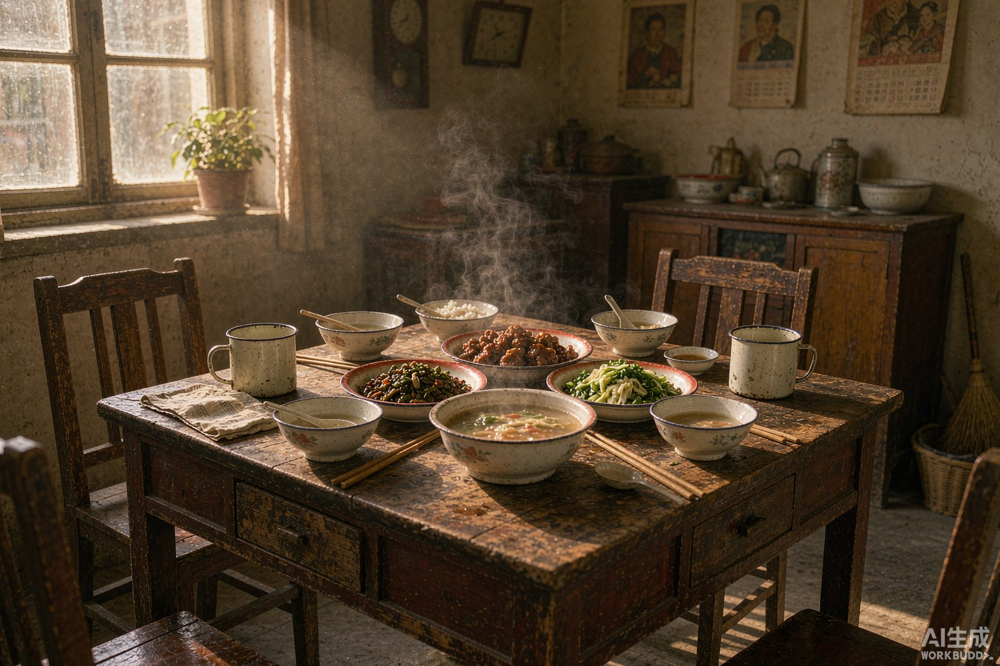

入冬以后，早晚的风明显凉了。 小区长椅上，几位老邻居照旧坐着晒太阳，手里捧着保温杯。张姨说，最近总觉得起床时头有点晕，想着「年纪大了都这样」，也就没当回事。
一句话说得轻，可身边人都听进去了。今天我们就聊聊「睡前少做这几件事，夜里更踏实」这件事，不吓人，也不开方子，只说几句能放在日子里的常识。
先把「年纪大了」这句话放一放
很多不舒服，长辈习惯往岁数上一推，觉得忍忍就过去了。可「常见」不等于「不用管」。 身体给出的信号，值得被认真记一笔：什么时候开始的、多久一次、什么情况下会明显一些。
立冬后护好血管，避开骤冷时段外出。把这些小变化写在本子上，去看医生时比凭记忆描述清楚得多。
日常里能自己做的几件小事

AI 生成 · 氛围示意
不必大改生活习惯，先从容易坚持的开始：
起居慢半拍：早上醒来先在床边坐一会儿，再慢慢起身；夜里起夜留一盏不刺眼的小灯。
动静结合：天气好时出门走走，量力而行，不必硬凑步数；觉得累就歇，别跟自己较劲。
吃得杂一点：主食、蔬菜、蛋奶豆制品搭配着来，喝水分次少量，别等口渴才想起。
记录别偷懒：血压、血糖这类指标按医生建议的时间测，记下来，复诊时一起带上。
这些都不是「偏方」，只是把日子过得更规整一些。
有这几样情况，别自己扛
AI 生成 · 氛围示意
身体出现明显不适、症状和平时不一样、或者持续几天不见好，最稳妥的做法是及时就医，听医生怎么判断。
还有一件常被忽略的事：药盒里那几种药，别凭感觉加减，也别把别人吃着有效的方子拿来自己试。用药清单整理好，拿给医生或药师看一遍，比到处打听更踏实。家里不妨给爸妈备一份小档案：既往病史、正在吃的药、过敏史、紧急联系人，放在抽屉里，用得上的时候不慌。
说到底，是有人惦记着
讲睡眠卫生：光线、饮茶、情绪、作息规律。很多时候，长辈缺的不是道理，是有人多问一句、陪着走一趟。
愿每一个家，都平安喜乐。——家事安康会
本文为健康科普与生活分享，不构成医疗建议；身体不适请及时就医，并遵从医生指导。
说明：本文部分配图由 AI 生成，仅作氛围示意，非真实人物与场景。
愿每一个家，都平安喜乐
这里是家事安康会，聊聊家长里短、相处之道与安康小事。
觉得有用，点个「在看」，也转给惦记的人。
内容仅供生活参考，具体情况请咨询专业人士。